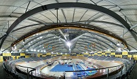

Track Cycle Racing
The Veledrome

A velodrome is an arena for track cycling. Modern velodromes feature steeply banked oval tracks, consisting of two 180-degree circular bends connected by two straights. The straights transition to the circular turn through a moderate easement curve.
The first velodromes were constructed during the mid-late 19th century. Some were purpose-built just for cycling, and others were built as part of facilities for other sports; many were built around athletics tracks or other grounds and any banking was shallow. Early surfaces included cinders or shale, though concrete, asphalt and tarmac later became more common.
Track Bikes
A track bike is optimized for racing at a velodrome or outdoor track. Unlike road bicycles, the track bike only a single gear and has neither a freewheel nor brakes. Tires are narrow and inflated to high pressure to reduce rolling resistance.